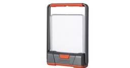
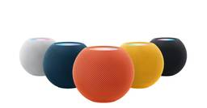
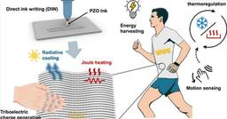

ギズモード・ジャパン
https://www.gizmodo.jp
日本最大のテクノロジー＆ガジェット専門メディア。YouTubeや記事を通じて、最新ガジェットの偏愛レビューから、AI／サイエンスの深掘りコンテンツまで幅広く発信しています。「みんなで探求する」を合言葉に、刺激的な未来の体験をシェアします。
フィード
近年見つかった「知られざる生き物たち」6選 1
1
ギズモード・ジャパン
2023年5月7日の記事を編集して再掲載しています。地球上には既知のものだけで約175万種の生物がいるそうです。まだ知られていない生物も合わせると、500万～3,000万種はいるのではという説もあるほど、多様です。近年も新しい種や行動などが…
3時間前
来るか、充電不要な世界線。体温を利用して発電する次世代ウェアラブル
ギズモード・ジャパン
ここ10年ほど、ウェアラブルガジェットは米Gizmodoでもギズモード・ジャパンでも、大きなトピックの1つ。日常的に使うアクセサリー、たとえばベルトや靴、靴下のように、ウェアラブルガジェットもまた日常的なガジェットとして世の中に浸透してきま…
4時間前
お値段にゼロ多すぎ！ ブルーサファイアクリスタル製の桁違いなG-SHOCK
ギズモード・ジャパン
定価1,100万円という史上最も高価なブルーサファイアクリスタル製のG-SHOCKが登場。桁違いの高級モデルの魅力と構造を解説します。
5時間前
これぞNothing流の最高級ヘッドホン。「Nothing Headphone (1) Pro」レビュー
ギズモード・ジャパン
個性的であること。それこそがNothingの真骨頂。トランスペアレントで個性的なデザイン、独自のユーザーインターフェイス、欧米では定番の飲みゲー「スピン・ザ・ボトル（spin the bottle＝瓶回しゲーム）」ができるドットマトリクスと…
7時間前
iPhone Duo買う？買わない？ 迷えるものたちに伝えたいこと
ギズモード・ジャパン
折りたたみiPhone「iPhone Duo」は買うべき？購入を決意した理由やiPad miniとの比較、魅力的な専用アプリのコンセプトまで迷える悩みを徹底解説します。
8時間前
東京が3億円で電気をかき集めた夏、カリフォルニアは家の蓄電池を束ねて乗り切った 7
ギズモード・ジャパン
去る9月9日の夕方、カリフォルニア。気温はぐんぐん上がり、エアコンがいっせいに唸りだす時間帯です。そのとき、14万軒のガレージで、壁に備え付けられた蓄電池がじわっと放電を始めました。合計580MW（58万kW）。ガス火力の発電所2〜3基ぶん…
9時間前
レゴで作る『ドラゴンボール』神龍、2万3980円です
ギズモード・ジャパン
ギャルのパンティおくれーーーっ!!!!!世界中に散らばるドラゴンボールを7つ集めると、願いを叶えるために現れる神龍。マンガ『ドラゴンボール』で要となるキャラクターですが、誰もが「ホントにいたらイイのになぁ」と思ったことでしょう。その願いは、…
9時間前
空の旅も自動運転の時代が来るか⁉︎ 完全自律飛行で初のアメリカ横断に成功
ギズモード・ジャパン
同乗のパイロット、どんな気持ちで1週間旅していたんだろう...。Joby Aviation社のセスナが完全自律飛行で、初めてアメリカ横断を成し遂げました。自律飛行技術「J208」を搭載した改造型セスナ・キャラバンは、カリフォルニア州からノー…
10時間前

筒型なんて時代遅れ。令和のランタンは薄さ39mmの「光る板」になった
ギズモード・ジャパン
わずか39mmの薄型収納性を実現したエナジャイザーのLEDランタンをレビュー。かさばる悩みを解決する画期的な光る板の魅力を解説します。
11時間前
無印良品の新作で、シンク下のバラバラ収納をひとまとめ。高さを変えられるから狭い場所にも使いやすい
ギズモード・ジャパン
無印良品の新作「折って高さが変えられる ターポリン収納ケース」でシンク下をスッキリ整理。バラつくボトルをひとまとめにするコツや使い方を紹介します。
12時間前
脱・白黒。新作イヤホン&ヘッドホンにひと昔前の空気感が戻ってきた 1
ギズモード・ジャパン
ヘッドホンやイヤホンの新製品を眺めていたら、あることに気がつきました。色がやたらと元気なんです。Beatsの新しいヘッドホンはクッション部分のカラーをカスタマイズできたり、Boseが出した有線イヤホンには珍しいミントグリーンも登場。ブラック…
14時間前
ChatGPTの力で「片付ける気すら起きないほど荒れた部屋」 が楽に綺麗になった話
ギズモード・ジャパン
2023年3月22日の記事を編集して再掲載しています。※この記事は編集部がChatGPTと触れ合った思い出を記録するものです。非常に忙しく、気づけば我が家は汚部屋状態。めちゃくちゃすぎて掃除にとりかかる気にさえなりません。でも、これをなんと…
15時間前

アップル、10月13日に新スマートホーム機器を発表か？「画面付きHomePod」来い！
ギズモード・ジャパン
まだまだ噂の段階ですが。先月iPhone 18 Pro発売、そして今月には初の折り畳みiPhone Duoのデビューを控えていますが、新製品ラッシュはまだ続きそう。Bloombergのマーク・ガーマン記者は、Apple（アップル）は10月1…
15時間前
データを動画化してYouTubeをクラウド保存場所にする猛者現る 1
ギズモード・ジャパン
2023年2月27日の記事を編集して再掲載しています。目を凝らしても3Dには見えませんよ？ 写真や動画をクラウド保存するならGoogleフォト、その他のデータならDropboxやOneDriveなどのサービスがありますが、容量を増やそうとし…
1日前

3D印刷で作ったテックな布、ちょっとした摩擦で発電する
ギズモード・ジャパン
涼しくて睡眠を記録するパジャマにして欲しい。ファッションとテクノロジーは親和性が高く、防水や防寒などは当たり前。光ったり温めたり、小型扇風機で装着者を涼しくしたり、防弾性など多岐に渡ります。また生地そのものが高機能だったり、電子機器と合わせ…
1日前
悪夢は続く…。RAM不足、2028年にかけてさらに悪化する模様
ギズモード・ジャパン
Micronの決算発表により、RAMやストレージの不足が2027〜2028年にかけてさらに深刻化する見通しが明らかに。今後のPC市場や価格動向について詳しく解説します。
1日前
このCDプレーヤー、CDはみ出ちゃうんですけど！→大丈夫です、仕様です 1
ギズモード・ジャパン
盤面が剥き出しになるスタイリッシュなFosi AudioのCDプレーヤー「DISC Nano」をご紹介。高音質DACやMagSafe対応など、オーディオファン注目のスペックを解説します。
1日前
デスクに置くウィジェット。Divoom「Astrotoo」は時計も天気もピクセルアートも映すスピーカー
ギズモード・ジャパン
フィジカルなコントローラーがついているとこが、Divoomらしい。デスクトップ・インフォテインメント端末と呼ぶべきか、それともデスクトップ・コンパニオンと呼ぶべきか。オーディオ・ガジェットブランドのDivoom発「Astrotoo」はBlu…
1日前
暗室なしでフィルムアーティスト気分。露光で遊べる新型ポラロイド
ギズモード・ジャパン
露光調整でクリエイティブな撮影が楽しめる新型ポラロイド「Polaroid Mod」が登場。暗室なしでアーティスト気分を味わえる魅力や機能を解説します。
1日前
「日本人離れ」の絶賛から一転してAI疑惑。話題のバンドTHE MOTELで何が起きている？ 2
ギズモード・ジャパン
タイムラインで絶賛されていたバンド、なんだか様子が変なんです…。9月下旬、あるバンドの演奏動画がX（旧Twitter）で一気に拡散しました。話題になったのは、5人組オルタナティブ・ロックバンドのTHE MOTEL。90年代グランジを思わせる…
1日前